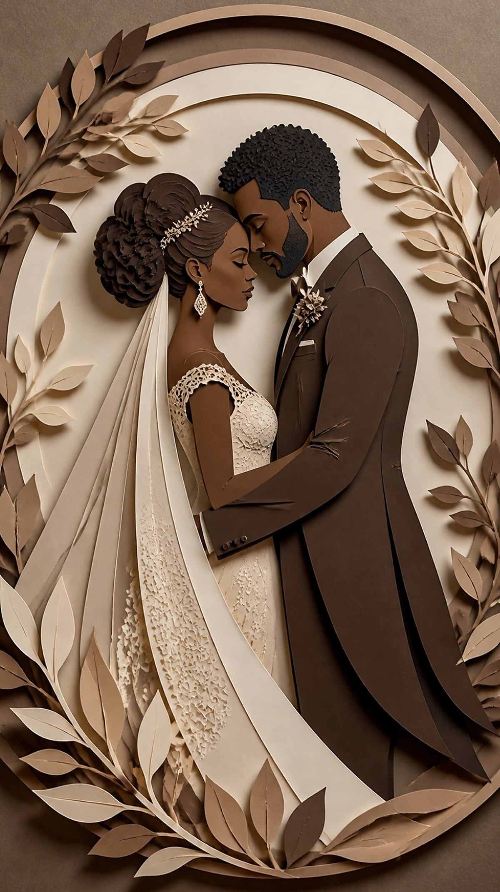
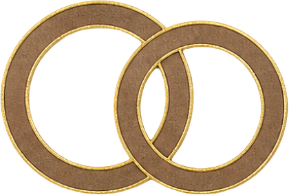
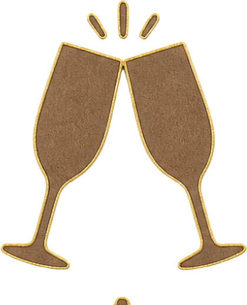
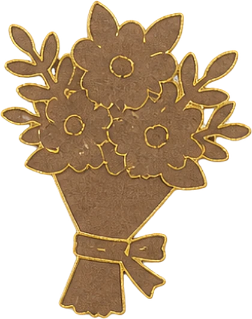
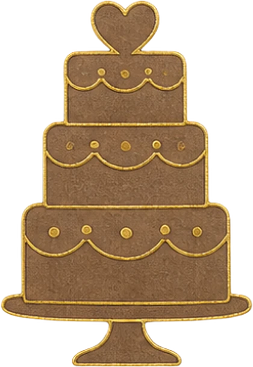
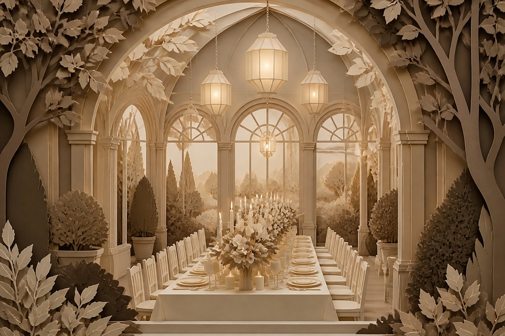
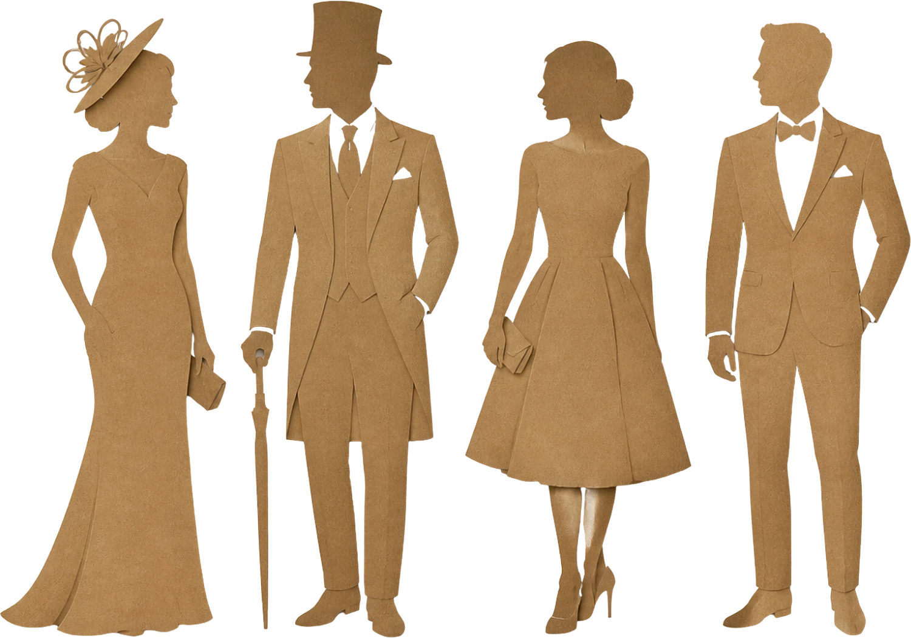

MariageLina&Gabriel26 · 06 · 2027
MariageLina&Gabriel26 · 06 · 2027


Le programme
Samedi 26 juin 2027

15 h 30Cérémonie au château
16 h 30Champagne dans les jardins
18 h 00Photos sous les tilleuls- 20 h 00Dîner aux chandelles
- 22 h 00Bal et quatuor à cordes

23 h 30Gâteau des mariés
Le lieu

Château de Beaulieu
Saumur

Tenue
Tenue de soirée
Robe longue, smoking ou costume trois pièces. Les tons crème, champagne, taupe et chocolat sont à l'honneur ; le chapeau est le bienvenu à la cérémonie.

Il reste
--jours
--heures
--minutes
Votre réponse
Merci de répondre avant le 15 mai 2027.
Je serai présent·eJe ne pourrai pas venir